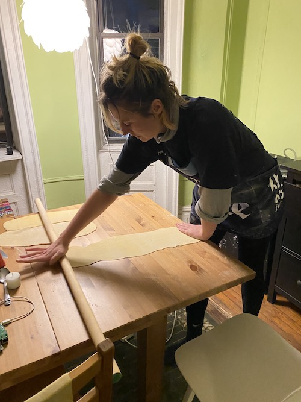

ravioli
gary can't think of a wonton pun, but he thinks one should go here
dough parts:
- 2 1/2 cups flour
- 3 eggs
- pinch of salt
- olive oil
filling parts:
- a squash or 2 (2 little guys, one big guy)
- garlic
- ricotta
- olive oil
sauce parts:
- first up, the dough. you put the flour in a big bowl (or on a surface if you're feeling brave), make a well in the middle and crack the eggs in with a pinch of salt and a glug of oil. (use 00 flour if you got it but we used plain and it was molto benne). mix the eggs with a fork in the middle, and the flour should slowly start to fold in. Work the mixture into a (fairly) stiff dough, use a little bit of water to loosen (or another egg if it yours were small).
- once it's a dough mass and you got all the flour up, turn it out onto a surface, and drizzle with a bit of oil. Knead till the surface of the dough feels really smooth (like, really good skincare smooth). this should be hard work, expect like 7min intense kneading. then, stick back in the bowl and cover with a bag. Leave in the fridge for at least an hour
- while your dough is doing it's thing, it's a good time to make the filling! this can be anything, but we made a nice one with acorn squash. i just quartered them, and placed a garlic clove inside each quarter, drizzled with oil and salt and stuck in the oven. when they came out, scraped them out (peeling first loses flesh!) and blended with the roast garlic, some queso fresco (ricotta stand-in), olive oil, an egg, a grind of black pepper and some breadcrumbs.
- time for rolling. divide your dough into 3 bars, trying to get them as square as possible. roll them out in turn, trying to make them as even as possible. you want to keep alternating between them: the dough starts out really elastic, then as you roll it out and leave it it dries a bit, making it less likely to spring back at you. After a few rounds (I did each 5 times I think) you can get it pretty thin and even. It should be fairly translucent by the time you're done
- cut each strip in half along the short axis (so you should divide one long piece into two shorter pieces, not two long pieces). take your mixture, and add spoonfuls in evenly-spaced intervals along one half. smear some water between each of the blobs so your dough is sticky, then gently place the other half on top. With your fingertips, press the spaces together, then cut them with a knife. They can be closer-together than you think!
- start your sauce by dicing an onion and frying on a low heat with butter and garlic. this should gently be browning while you cook your ravioli
- wow ok time to cook the ravioli. stick on a pan of water, really salt it, then bring it to the boil. When it's at a rolling boil, put your ravioli in. Stir to make sure none are sticking to the bottom, and try cooking in batches rather than having too many at once. They're getting there when they rise to the top: I cooked them for 5min after they'd done that, and that was good!
- enjoy the fruits of your labour with parmesan and ground black pepper!!
Other fillings to try:
sausage + ricotta + parsley + parmesan
spinach and ricotta/goat cheese